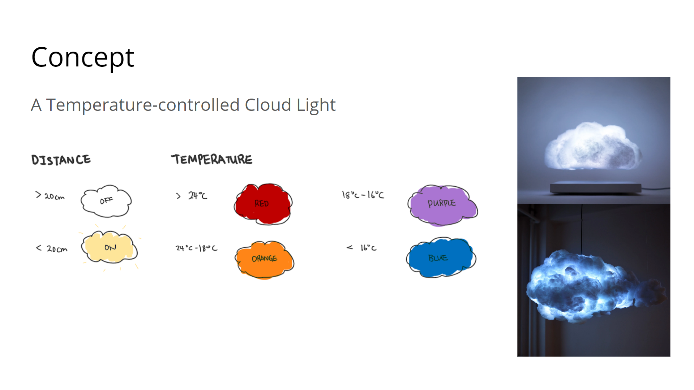
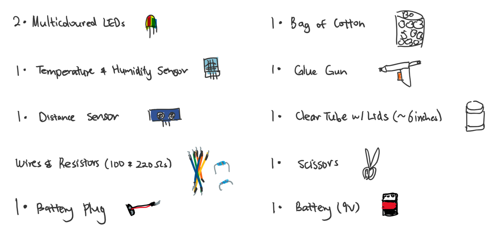
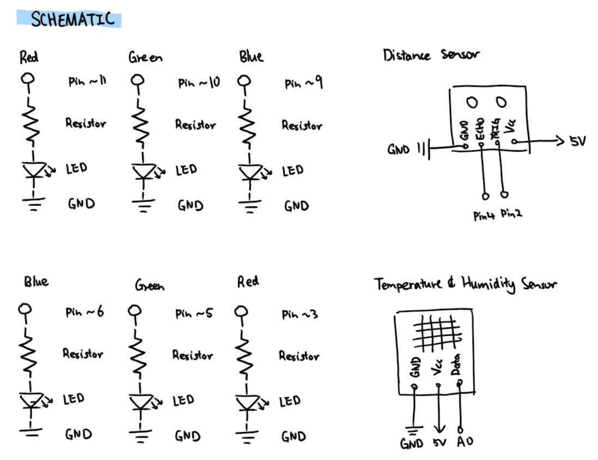
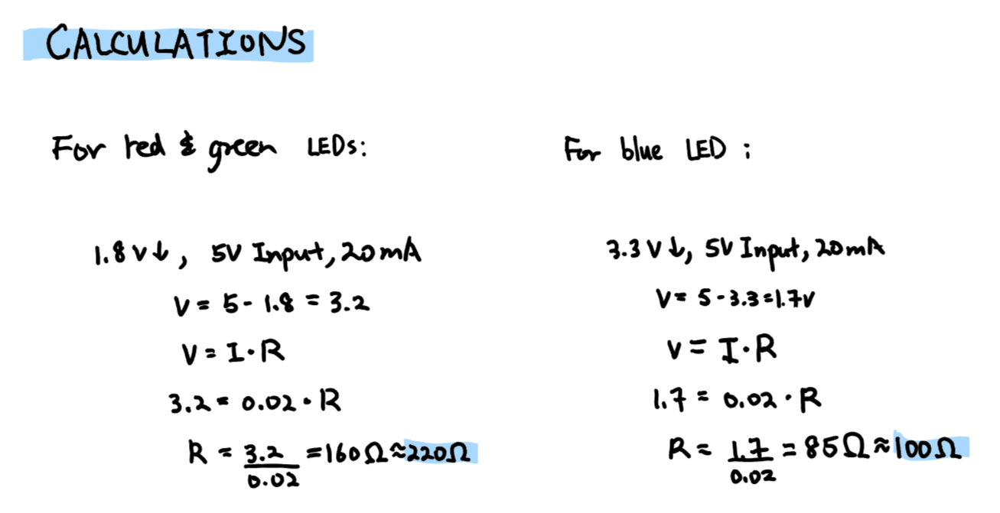
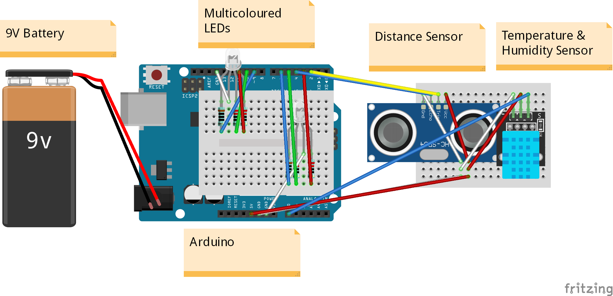
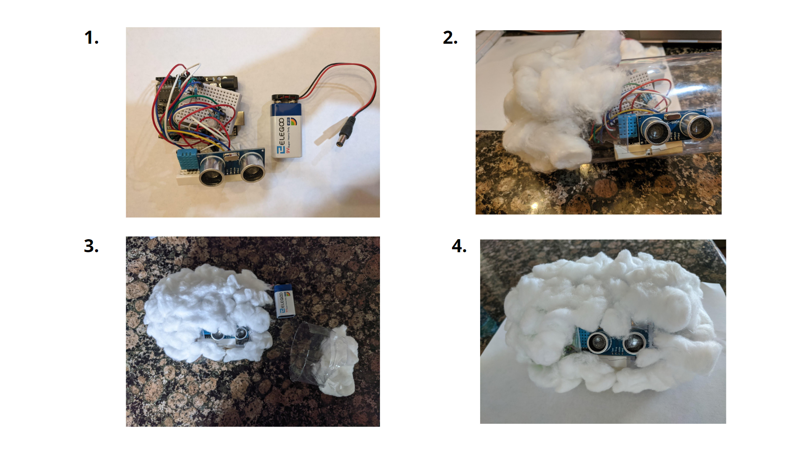

Here is all the documentation for my final project!

For my final project, I decided to create a temperature controlled cloud light. I decided
on this idea for two main reasons. First, I recently stumbled across cloud lamps, as seen
on the right, that looked super cool. Second, I became slightly obsessed with lighting up
LEDs using Arduino, especially the multi-coloured ones, due to this class. So I thought, why
not creat my own variation of a portable cloud lamp that changes colour based on the temperature.
The cloud lamp can be lit up by standing 20 centimeters or less to it. If it is really cold,
less than 16 degress celsius, it will turn blue. If it is kind of cold, from 16 to 18 degress
celsius, it will turn purple. If it is warm, from 18 to 24 degrees celsius, it will turn orange
Lastly, if it is very warm, higher than 24 degrees celsius, it will turn red. By standing more
than 20 centimeters from the light, it will turn off.
Here is a video of demonstrating the cloud light in action.

To recreate my cloud light. You will need the materials listed above. Specifically,
KY-015 Temperature and Humidity Sensor and a HC-SR04 Ultrasonic Distance Sensor
For the cotton, I would suggest purchasing coarser cotton if possible. I went
with my cotton balls because they were the most reasonable thing I could find.


Here are the schematic and justifications for the resistance I chose. For the red and green sections of the multicoloured LED, any resistor higher than 85 ohms could be used and I chose a 100 ohms resistor. For the blue sections of the multicoloured LEDs, any resistor higher than 160 ohns could be used and I chose a 220 ohms resistor.

Here is my circuit layout. It consists of two mini breadboards. One with the multicoloured LEDs, and another with the temperature and humidity sensor and distance sensor. A 9V battery is connected via a DC headjack head battery plug to the Arduino, allowing the system to be portable.
// The following code borrows from the sources below:
// https://howtomechatronics.com/tutorials/arduino/ultrasonic-sensor-hc-sr04/
// https://create.arduino.cc/projecthub/techno_z/dht11-temperature-humidity-sensor-98b03b
// Include Temperature & Humidity Sensor Libary
#include
// Analog Pin sensor is connected to
#define dht_apin A0
// Sets variable for Temperature & Humidity sensor
dht DHT;
// Constant for Trig pin of distance sensor
const int TRIG = 2;
// Constant for Echo pin of distance sensor
const int ECHO = 4;
// Constant for first red LED pin
const int RED_1 = 11;
// Constant for first green LED pin
const int GREEN_1 = 10;
// Constant for first blue LED pin
const int BLUE_1 = 9;
// Constant for second red LED pin
const int RED_2 = 3;
// Constant for second green LED pin
const int GREEN_2 = 5;
// Constant for second blue LED pin
const int BLUE_2 = 6;
// Long variable for duration
long duration;
// Int variable for distance
int distance;
// Function called when file starts
void setup() {
// Sets first red LED pin as output
pinMode(RED_1, OUTPUT);
// Sets first green LED pin as output
pinMode(GREEN_1, OUTPUT);
// Sets first blue LED pin as output
pinMode(BLUE_1, OUTPUT);
// Sets second red LED pin as output
pinMode(RED_2, OUTPUT);
// Sets second green LED pin as output
pinMode(GREEN_2, OUTPUT);
// Sets second blue LED pin as output
pinMode(BLUE_2, OUTPUT);
// Sets the trig pin as an Output
pinMode(TRIG, OUTPUT);
// Sets the echo pin as an Input
pinMode(ECHO, INPUT);
// Initiates Serial Monitor at 9600 baud
Serial.begin(9600);
// Delay to let system boot
delay(500);
// For status update; shows that sensor is on
Serial.println("DHT11 Humidity & temperature Sensor\n\n");
// Wait before accessing Sensor
delay(1000);
}
// function executed after setup; repeatedly
void loop() {
// Clears the trig pin
digitalWrite(TRIG, LOW);
// Delays for 2 microseconds
delayMicroseconds(2);
// Sets the trig pin on HIGH state
digitalWrite(TRIG, HIGH);
// Delays for 10 microseconds
delayMicroseconds(10);
// Sets the trig pin to LOW state
digitalWrite(TRIG, LOW);
// Reads the echo pin, returns the sound wave travel time in microseconds
duration = pulseIn(ECHO, HIGH);
// Calculating the distance
distance= duration*0.034/2;
// Prints the following to Serial Monitor
Serial.print("Distance: ");
// Prints the detected distance to Serial Monitor
Serial.print(distance);
// Prints the following to Serial Monitor
Serial.println(" cm");
// Delays for 1000 miliseconds
delay(1000);
// If the distance is less than 20 cm
if (distance < 20) {
// Will read temperature & humidity from temperature & humidity sensor
DHT.read11(dht_apin);
// Prints the following to Serial Monitor
Serial.print("temperature: ");
// Prints the detected temperature to Serial Monitor
Serial.print(DHT.temperature);
// Prints the following to Serial Mintor
Serial.println(" °C");
// If the detected temperature is higher than 24°C
if (DHT.temperature > 24) {
// Writes the first red pin as 255 (turn on)
analogWrite(RED_1, 255);
// Writes the secoond red pin as 255 (turn on)
analogWrite(RED_2, 255);
// Writes the first blue pin as 0 (turn off)
analogWrite(BLUE_1, 0);
// Writes the second blue pin as 0 (turn off)
analogWrite(BLUE_2, 0);
// Writes the first green pin as 0 (turn off)
analogWrite(GREEN_1, 0);
// Writes the second green pin as 0 (turn off)
analogWrite(GREEN_2, 0);
// If the detected temperature is [24, 18)°C
} else if (DHT.temperature <= 24 && DHT.temperature > 18) {
// Writes the first red pin as 255 (turn on)
analogWrite(RED_1, 255);
// Writes the first green pin as 60
analogWrite(GREEN_1, 60);
// Writes the secoond red pin as 255 (turn on)
analogWrite(RED_2, 255);
// Writes the second green pin as 60
analogWrite(GREEN_2, 60);
// Writes the first blue pin as 0 (turn off)
analogWrite(BLUE_1, 0);
// Writes the second blue pin as 0 (turn off)
analogWrite(BLUE_2, 0);
// If the detected temperature is [18, 16)°C
} else if (DHT.temperature <= 18 && DHT.temperature > 16) {
// Writes the first red pin as 100
analogWrite(RED_1, 100);
// Writes the first blue pin as 150
analogWrite(BLUE_1, 150);
// Writes the second red pin as 100
analogWrite(RED_2, 100);
// Writes the second blue pin as 150
analogWrite(BLUE_2, 150);
// Writes the first green pin as 0 (turn off)
analogWrite(GREEN_1, 0);
// Writes the second green pin as 0 (turn off)
analogWrite(GREEN_2, 0);
// If the detected temperature is less or equal to 16°C
} else if (DHT.temperature <= 16) {
// Writes the first blue pin as 255 (turn on)
analogWrite(BLUE_1, 255);
// Writes the first blue pin as 255 (turn on)
analogWrite(BLUE_2, 255);
// Writes the first red pin as 0 (turn off)
analogWrite(RED_1, 0);
// Writes the second red pin as 0 (turn off)
analogWrite(RED_2, 0);
// Writes the first green pin as 0 (turn off)
analogWrite(GREEN_1, 0);
// Writes the second green pin as 0 (turn off)
analogWrite(GREEN_2, 0);
}
// If distance is more than 20 cms
} else {
// Write first red pin as 0 (turn off)
analogWrite(RED_1, 0);
// Write first green pin as 0 (turn off)
analogWrite(GREEN_1, 0);
// Write first blue pin as 0 (turn off)
analogWrite(BLUE_1, 0);
// Write second red pin as 0 (turn off)
analogWrite(RED_2, 0);
// Write second green pin as 0 (turn off)
analogWrite(GREEN_2, 0);
// Write second blue pin as 0 (turn off)
analogWrite(BLUE_2, 0);
}
}
This is the code snippet for the Arduino. It starts by including a temperature and humidity sensor library, which you can download and install via the second commented link in the beginning, sets appropriate pins for the distance sensor, temperature & humidity sensor, and LED, and declare variables. It then sets up the LED and trig pins as outputs, echo pin as input, and initiates Serial monitor. Within the loop, it first initiated the distance sensor, reads and calculate the detected distance. If the distance sensed is lower than 20 cms, then the temperature sensor senses the temperature in celsius and returns the value to the Arduino as an input. If this value is > 24 (LEDs = Red); if value is [24, 18) (LEDs = Orange); if value is [18, 16) (LEDs = Purple); if values is <= 16 (LEDs = Blue); if distance becomes more than 20 cms, turn all LEDs off.
I would suggest by connecting the system to the Arduino first before connecting it to a 9V battery, This code will output the values to the Serial monitor, allowing you to identify any potential issues.

The cloud light can be assembled using the following instructions. 1. Assemble the circuit using the material provided above and ensure the code is working. 2. Create the cloud container by cutting out a one inch slit on the transparent container. This allows the distance sensor to peek through and sense accurate values. Then, loosen the cotton balls using hands and glue gun it onto the transparent container as show above. 3. Once the body of the container is completed. Repeat the same procedure for the exterior surface of the container lid. Made slits for the distance sensor if necessary. 4. Connect the 9v battery, insert your Arduino system into the container and close the lid. The cloud light is complete! :)